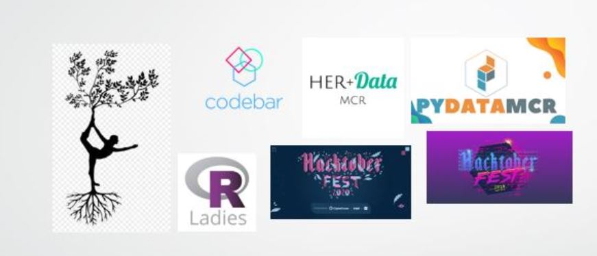

Evangelia Loukatou
My name is Evangelia Loukatou...Please write more...
Main responsibilities include:
Main responsibilities include:
More details ...
Main tasks include:
Main tasks include:
Events being organised:
Main tasks include:
Events being organised:
Main tasks include:
Main tasks include:
Main tasks include:
I am a yoga addict and I like walking in sea and residential areas, as well as visiting bookshops and data meetups!
My previous fundraising pages regarding various running and other challenges can be found here and here. I am also a monthly donator at Prostate Cancer UK, and I donate knitted scarfs to British Heart Foundation.
In addition, when forced indoors, I study French, I knit and spend my free time exploring the latest advancements in energy storage, open source development and data science. I used to keep a blog of my knitting experience in the winter months.
Interests 